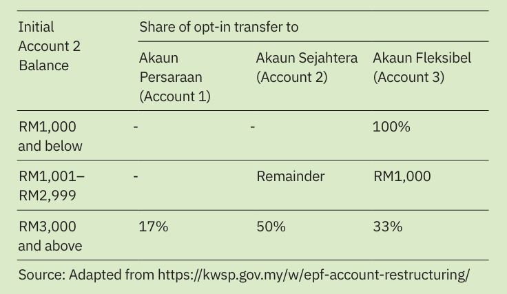
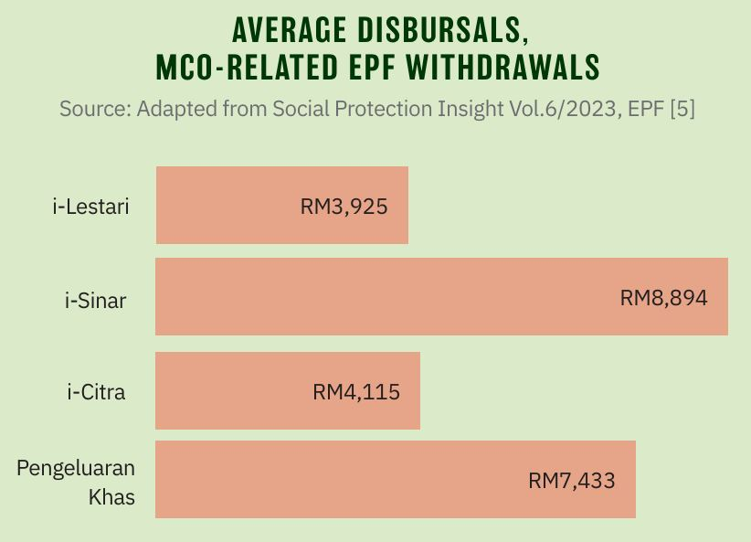
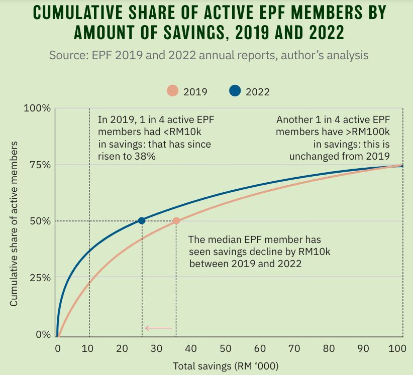
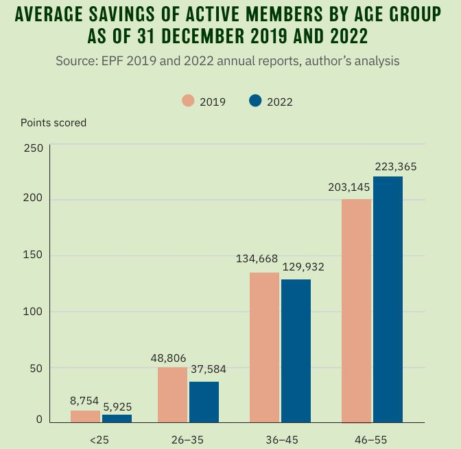

First published in Penang Monthly (June 2024).
IN MAY 2024, Malaysia’s retirement savings fund, the Employees’ Provident Fund (EPF), restructured contributors’ accounts with the introduction of Account 3, a new, flexible account. The public, grappling with a rising cost of living, has been pressing for further withdrawal options. Account 3, emphasising flexibility, can be seen as a response to this pressure. However, concerns remain about the potential impact on long-term retirement security.
What Is Account 3?
Currently, 70% of EPF contributions go towards Account 1, which may only be withdrawn when members are 50. The remaining 30% is deposited in Account 2, which may be withdrawn earlier, subject to conditions set by the EPF.
With the new structure effective 11 May 2024, 10% of monthly contributions will now be channelled into Account 3, formally known as Akaun Fleksibel. 75% will be credited to Account 1, now known as Akaun Persaraan, while Account 2’s (now known as Akaun Sejahtera) share has been halved to 15% of contributions. Unlike the restrictions on the existing two accounts, funds in Akaun Fleksibel may be withdrawn at any time for any purpose. As part of the transition, members have up to 31 August 2024 to opt in to transfer part of their initial Account 2 balance to Akaun Fleksibel, subject to the balance remaining in Account 2.
The increased liquidity is a double-edged sword: although EPF members may be more inclined to contribute knowing they may withdraw money for emergencies, diverting hard-earned retirement funds to a readily accessible account might deplete retirement savings prematurely.

A Cause for Concern: Low EPF Savings
The introduction of Account 3 comes amid growing concern about Malaysians’ insufficient retirement savings in their EPF accounts. Recent reports indicate that many contributors, particularly those under 55, have critically low savings.
As of 2022, the median savings of active EPF members aged 54 was RM132,8261: in other words, 50% of active members retiring in 2022 have less than RM132,826 available for retirement, or equivalently, just over RM550 a month to spend over 20 years of life. This falls dramatically short of the minimum threshold set by the EPF, known as the Basic Savings Quantum, of RM240,0002at age 55, equivalent to RM1,000 per month for the next 20 years.
On an age-adjusted basis, the EPF estimates that as of May 2023, the share of members aged 18 to 55 meeting the basic savings requirement has declined from 20.4% pre-pandemic to 18.4% post-pandemic3.
Furthermore, the share of Malaysia’s population covered by old-age protection is shockingly low; according to EPF estimates as of December 2023, three in five (or 58%) working-age adults do not have old-age protection, whether from active EPF contributions or the civil service pension scheme—a trend that is exacerbated with the rising popularity of informal employment4.
Malaysians’ retirement savings shortfall is a long standing issue worsened by policies accompanying the Movement Control Orders (MCOs) imposed at the onset of the Covid-19 pandemic. As government aid packages proved inadequate, the government initiated four special withdrawal programmes permitting EPF members to withdraw from their retirement savings. Economist Muhammed Abdul Khalid was quoted in a Channel News Asia article criticising the move as “the worst policy ever [that] the country has announced and implemented”.

When comparing EPF reports for 2019 and 2022, the magnitude of the depletion of savings for the most vulnerable EPF members is substantial. Across all active EPF members—although a quarter have more than RM100,000 in savings—another one in four members had less than RM10,000 in 2019, the rate of which has since risen to over one in three in 2022. Just under half (49.4%) of EPF members had less than RM35,000 in savings in 2019; median savings across active members has since fallen to around RM25,000 in 2022—a decline of about RM10,000. While the middle half of EPF members had RM10,000 to RM100,000 in savings in 2019, that range has since expanded to RM4,500 to RM100,000 in 2022.

Moreover, the burden of the pandemic has had a disproportionate impact on younger cohorts. Between 2019 and 2022, average savings for the under-25 and 26-to-35 cohorts have declined by 32% and 23% respectively, while savings for older cohorts were virtually unchanged, with the 46 to 55 cohort seeing an increase in savings.

The pensions provider is not to blame. The EPF is well-regarded for producing consistent and substantial returns. Benchmarked against individual earnings, it performs on par with East Asian counterparts and Organisation for Economic Co-operation and Development (OECD) economies: net pension wealth is 10.9 times individual net earnings for lower-earning men and women, compared to 13.6 (men) and 15 (women) times in the OECD5.
Rather, inadequate wages coupled with stagnating and uneven income growth is the primary driver for lacklustre retirement savings. Half of Malaysians working in the formal sector earn less than RM2,600 a month (Formal Sector Wages, Q3 2023), and 23.2% (2022) of employment in Malaysia lies in the informal sector. An article in Penang Monthly’s January 2024 issue highlights how wages for semi-skilled workers grew by just 3.5% per annum between 2010 and 2022, even as low-skilled workers registered 5.7% in income growth, bolstered by minimum wage mandates6.
In a bid to build retirement savings, the government raised the voluntary contribution limit to RM100,000 per year in the 2023 Budget, up from RM60,000. Although contributions have risen by 15% from 20227 with just a quarter of active EPF members having more than RM100,000 in retirement savings, the policy does not help the majority of EPF members, although it may have been geared to shore up liquidity in anticipation of Account 3. Likewise, the Private Retirement Scheme introduced in 2012, while vital to liberalising the pension funds markets, should not be viewed as a solution for Malaysia’s retirement savings conundrum.
Worse yet, Malaysian households are highly indebted. In February 2024, household debt registered double-digit year-on-year growth in all segments except for personal use loans8. At 84.2% of gross domestic product (GDP) in December 20239, Malaysia’s households accrued a high level of household debt, driven by an unbridled homeownership policy and car-centric urban planning. Debt repayments place considerable pressure on households’ ability to save, calling into question the use of strategies to boost savings as a fix for Malaysia’s retirement woes.
In the longer term, Malaysia’s ageing population is poised to further strain EPF members’ and government coffers. Today, the average 55-year-old Malaysian can expect to live 23.5 more years, which means that retirement savings will have to last over longer lifespans. At the same time, the EPF will have to deal with the consequences of a shrinking old-age support ratio on its asset mix as withdrawals outpace contributions.
At the fiscal level, it will be challenging for the government to finance additional old-age income security with declining tax revenue collected from a shrinking working-age population. Ironically, with the government declining to rationalise pensions for current civil servants, civil service pensions will continue to strain the government’s fiscal position in the near future10.
The EPF: One of Many Free Lunches
Einstein is, perhaps mistakenly, often credited with the quote that compound interest is the most powerful force in the universe. Indeed, with the EPF’s excellent track record of consistently paying around 5% in dividends each year, it would take just over 14 years to double your EPF contributions11.
Policymakers in Malaysia seem to concur, banking on the power of compound interest to support anything from children’s tertiary education (via the Perbadanan Tabung Pendidikan Tinggi Nasional—PTPTN) to retirement savings. In a way, the Malaysian approach attempts to control social spending by relying on dividends to support social goals.
For an example of this thinking, inspired by the establishment of Bank Rakyat, which has paid consistent double-digit dividends to its shareholders, former Tabung Haji chairman, Abdul Azeez Abdul Rahim, proposed in parliamentary debates the formulation of a new bank—Bank Rakyat 2.0—as a means to provide substantial dividends, particularly to lower-income communities12.
Unfortunately, this formula may be economically counterproductive and reinforces existing social inequalities. In a blog post, economist, Hafiz Noor Shams, posits that Malaysia’s landscape of high-return, risk-free investments, from Amanah Saham Bumiputera (ASB) to Tabung Haji, caters primarily to the already affluent and serves to the detriment of productive economic activity13.
The fledgling economics student is taught the mantra, “There is no free lunch.” The same applies to risk—investors need to be compensated with higher returns if they are to take on more risks. In an environment saturated with risk-free opportunities, households would be less likely to supply capital to productive investments, whether it be channelling money towards the financial markets or starting a business.
With 62% of its investments in the domestic market14, the EPF acknowledged the risk of “crowding out” domestic entrepreneurship in a 2023 interview with The Edge, although it does not believe it has crossed that juncture.
Moreover, relying solely on compound interest is of little help to members with limited income available for savings. 6.9% of the richest EPF members in 2022 hold almost half (49%) of active members’ savings, down from around 10% in 2022 (10.6% of members hold 52.5% of savings). Even more jarring, Hafiz observes how the top 1% of Tabung Haji depositors contribute half of the savings in the fund.
Persons involved in the informal sector, in particular, face volatile income streams, which may discourage them from contributing to the EPF. For them, design tweaks to the pensions system, such as Account 3, may provide peace of mind, knowing that their EPF contributions do not compromise their ability to deal with rainy-day expenses.
Indeed, Bank Negara Malaysia emphasises in its Economic and Monetary Review 2022 that long-term reforms are required to fix the structural issues underlying Malaysia’s low levels of retirement savings—in particular low wages, low savings and low informal sector coverage.
What to Consider
Account 3 strikes a balance between relaxing the prescriptive nature of Account 2 withdrawals and tightening the discipline of Account 1. With the introduction of Account 3, the revised EPF structure is a fair trade-off between increased flexibility and retirement security. Although withdrawals are more readily available than before, the flexible component of retirement contributions has, in fact, declined.
However, with many members’ savings depleted, at merely 10% of contributions, Account 3 will not be a substantial nor a sustainable safety net for most. Moreover, the one in three active members who has less than RM10,000 in retirement savings is faced with the prospect of withdrawing more than 10% of their retirement savings.
Importantly, Account 3 must not be regarded as an expansion of the social safety net. Rather, it is a compromise forced by the precedent of MCO-era policies allowing EPF withdrawals to fill the gaps of the social safety net. Therefore, it is laudable that the share of contributions flowing to Account 1 have been raised to preserve retirement savings and limit outflows that may be triggered by a hypothetical future withdrawals programme.
Crucially, the authorities must pursue bold strategies to raise wages to truly help households keep up with the cost of living and replenish retirement funds, such as:
Restoring workers’ bargaining power: tackling Malaysia’s dwindling unionisation rate and enhancing labour dispute resolution systems may raise wages and improve working conditions.
Accelerate women’s participation in the workplace: by pursuing shared parental leave policies, promoting flexible work arrangements and preventing discrimination in the workplace, dismantling roadblocks to women’s participation in the workforce has the potential to double income sources within families.
Expanding the availability of support services: services such as financial planning and career guidance alongside a comprehensive social safety net can support upskilling, reskilling, entrepreneurship and other productive, enterprising pursuits.
Holistic strategies to promote well-being at the workplace: by tackling hazards such as extreme temperatures, accidents and diseases, workers’ earnings potential can be sustained and prolonged across their life course.
Footnotes
The EPF announced in December 2023 plans to raise the basic savings quantum to RM340,000 https://www.malaymail.com/news/malaysia/2023/12/05/epf-confidentprogressive-wage-policycan-boost-retirementsavings-by-54pc/105873↩︎
https://www.kwsp.gov.my/documents/d/guest/social-protectioninsight-vol-6_2023↩︎
https://www. freemalaysiatoday.com/category/nation/2024/03/03/40-of-17-million-workforce-not-covered-by-epf/↩︎
https://www.oecd-ilibrary.org/sites/2c555ff8-en/1/3/2/6/index.html?itemId=/content/publication/2c555ff8-en&_csp_=618dc867ebfad4dd8ba60e3e2f8dcdf9&itemIGO=oecd&itemContentType=book↩︎
https://penangmonthly.com/article/21061/on-the-proposed-progressivewage-model-in-malaysia↩︎
Household Debt, OpenDOSM↩︎
Financial Stability Review 2H 2023, BNM↩︎
See https://theedgemalaysia.com/node/700728 for an overview of the government’s civil service pensions financial commitments.↩︎
Calculated with the Rule of 72, a quick estimate for determining how long an investment will take to double in value, assuming a constant compound interest rate. By dividing 72 by the annual interest rate (5% in this case), we get approximately 14 years. This suggests it would take roughly 14 years for your EPF contribution to double at a consistent 5% annual return. It’s important to note that the Rule of 72 is an approximation, and actual results may vary slightly.↩︎
Dewan Rakyat Hansard, 30th November 2021↩︎
https://thediplomat.com/2024/03/malaysias-state-run-investment-funds-had-amixed-2023/↩︎